1. Tech Expo
Dr. D.D. Sharma (EE): 9411471784
Dr. Deepak Gangwar (EI): 9718508870
Dr. M.S. Karuna (CH): 9359501112
Dr. Vishal Saxena (ME): 9412738873
Dr. Preeti Yadav (CS): 9319306448
Dr. Sumit Srivastava (EC): 9411917873
Dr. Anil Kumar Bisht, Dr. Rohit Verma, Dr. Pranjal Saxena
The grand exhibition of technological marvels.
- Eligibility: Open to Diploma, undergraduate, postgraduate students, and research scholars.
- Team Size: Individual or teams of 2–4 members with one nominated leader.
- Originality: Projects must be original and developed by the participating team.
- Project Type: Can be hardware-based, software-based, or hybrid in nature.
- Requirements: Participants must bring their own laptops, hardware components, and accessories.
- Reporting: Teams must report at least one hour before the scheduled evaluation time.
- Conduct: Any form of plagiarism, misrepresentation, or misconduct will lead to disqualification.
- Evaluation: Based on innovation, technical depth, feasibility, and presentation.
Theme: 'Engineering Innovations for Society, Sustainability, and Smart Technologies'.
Tech Expo is a flagship academic activity aimed at promoting interdisciplinary collaboration and innovation. It provides a platform for students to showcase expertise through working models, prototypes, and software solutions across various sub-themes like AI, IoT, Robotics, and Cybersecurity.
* For more detail regarding the event, please see the booklet.
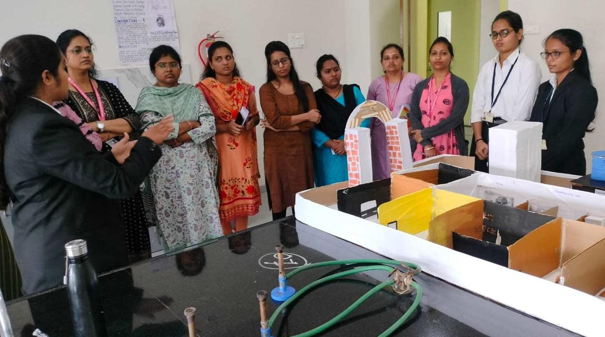
2. Pharma Model Competition
Showcase innovative models in the field of Pharmaceutical sciences.
- Eligibility: Open to Diploma, Undergraduate, Postgraduate, and Research students of Pharmacy.
- Team Size: Individual or teams of 2–4 members.
- Categories: Working Models (functional mechanisms) or Non-Working Models (static/conceptual).
- Presentation: Each team gets 5–7 minutes for presentation and 2–3 minutes for questions.
- Safety: Use of high-voltage, hazardous chemicals, live animals, or human samples is strictly prohibited.
- Support: Posters, charts, or LCD presentations may be used as supporting material.
This competition aims to encourage innovation and practical application of pharmaceutical concepts. Models should relate to Pharmaceutical Sciences, including Pharmaceutics, Pharmacology, and Public Health & Patient Safety.
Requirement: Participants must clearly explain the title, concept, application in healthcare, and advantages/limitations of their model.
* For more detail regarding the event, please see the booklet.
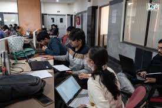
3. Agglomeration
A mix of technical challenges and team coordination.
- No Internet Policy: Internet access will NOT be provided during the competition. Since the focus areas are declared in advance, participants are expected to prepare thoroughly from those topics. All questions will strictly belong to the predefined focus areas, and no external topics will be included. Teams must solve and demonstrate their solutions entirely without internet assistance.
- Unique Feature – Chit-Based Random Task Selection: All coding tasks will be prepared strictly based on predefined focus areas. Each task will be written on individual chits and placed in a bowl. Every team will randomly pick one chit and must solve the task mentioned on it. Chits cannot be exchanged once selected. This ensures fairness, transparency, and real-time adaptability.
- Exactly 2 members per team (mandatory).
- Cross-year teams allowed.
- Participants from any academic background may collaborate.
- One system will be allotted per team.
- Discussion is allowed only within the team.
- Any form of plagiarism or copying will result in disqualification.
- Judges' decision will be final and binding.
* For more detail regarding the event, please see the booklet.
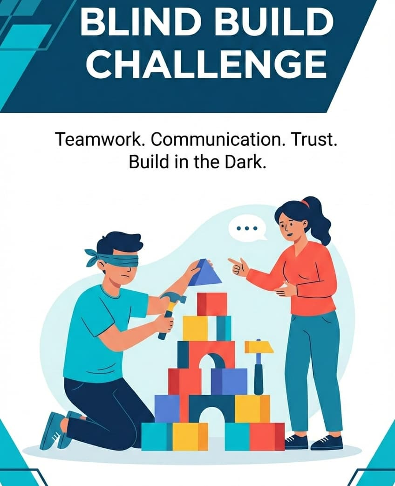
4.Blind Build Challenge
Code or build without seeing. Coordination is key.
- Team Composition: Each team will consist of two participants.
- Roles: One member acts as the Blind Builder (blindfolded), and the other acts as the Guide.
- Communication: Only verbal communication is allowed; gestures, signals, or written instructions are prohibited.
- Restrictions: Guides are not allowed to touch the Builder or the materials. Electronic devices like mobile phones and smartwatches are strictly prohibited.
- Materials: All building materials will be provided by the organizers; external materials are not allowed.
- Disqualification: Any attempt to remove the blindfold, rule violations, or damage to property will lead to immediate disqualification.
The Blind Build Challenge is a team-based technical and fun activity where one participant builds a structure while blindfolded, relying entirely on verbal guidance from teammates. The event emphasizes communication, teamwork, creativity, and problem-solving skills under time constraints.
* For more detail regarding the event, please see the booklet.

5. Hackathon
Code your way to the future. 12-hour coding marathon.
Organized by: Codevirus Security
In Collaboration with: Mahatma Jyotiba Phule Rohilkhand University
Hack Secure 2.0 is a national-level, 12-hour innovation hackathon focused exclusively on Web Development and Artificial Intelligence. Participants will develop real-world projects within a structured 12-hour window and present their solutions to an expert technical evaluation panel.
The event is designed to test creativity, technical proficiency, teamwork, and real-time problem-solving under pressure.
- Reporting & Opening Brief: Introduction and rules.
- Problem Statement Announcement: Revealing the technical challenges.
- Project Development (Web / AI): 12 hours of intensive coding.
- Scheduled Breaks: Periodic intervals for rest and refreshments.
- 💰 Starting Prize Pool: ₹30,000+ (Note: The total prize pool is dynamic and may increase based on the total number of participants!)
- 🥇 First Prize: Cash Reward + Achievement Certificate
- 🥈 Second Prize: Cash Reward + Achievement Certificate
- 🥉 Third Prize: Cash Reward + Achievement Certificate
- 🚀 Career Growth: Internship Preference: Top-performing participants will be given priority preference for internships at Codevirus Security.
- Certification: National-level participation certificate for all attendees.
- Hands-on Experience: Practical exposure to Web & AI project development.
- Expert Feedback: Evaluation by an experienced technical panel.
- Networking: Connect with fellow tech innovators and industry mentors.
- All team members must register separately to ensure certificate accuracy.
- Registration Fee: ₹500 per participant (One-time, Non-Refundable).
- Payment Requirement: Participants must complete the registration payment before submitting this form.
* For more detail regarding the event, please see the booklet.
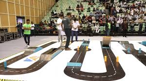
6. Robo Race
Navigate the track with your mechanical beast.
- Dimensions: Must fit within 25 cm x 20 cm x 15 cm or 30 cm x 30 cm x 30 cm.
- Weight: Maximum weight must not exceed 5 kg.
- Power Source: Electrically powered only (Battery/DC); IC engines are strictly prohibited.
- Construction: Robots must be custom-built; ready-made kits or Lego parts are generally not allowed.
- Control: Wired or wireless; wired bots must have a long, slack cable.
- Winner: Decided by the least time taken to complete the track (Time Trial System).
- Obstacles: Track includes bridges, speed breakers, marble pits, slippery paths, and seesaws.
- Hand Touches: Limited manual touches (e.g., 3) are allowed but result in penalties.
- Disqualification: Occurs for destroying the arena, using illegal parts, or wire pulling to assist movement.
Robo Race is a technical robotics competition where manually controlled robots compete on an obstacle-filled track. The objective is to design a fast, stable, and robust robot capable of completing the course in the least possible time.
* For more detail regarding the event, please see the booklet.
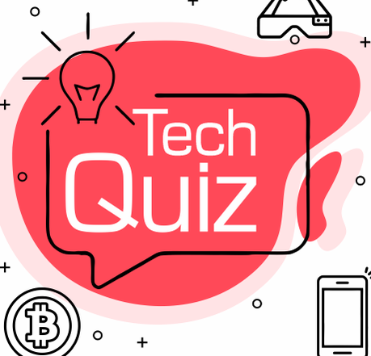
7. Technical Quiz
Test your tech knowledge in this comprehensive quiz.
- Round 1: Preliminary Screening – MCQ round covering basic and applied technical concepts.
- Round 2: Analytical & Problem-Solving – Numerical problems and case studies focusing on application-based thinking.
- Round 3: Rapid Fire / Buzzer Round – Fast-response questions testing depth of knowledge and presence of mind.
- Team Size: 4 members per team.
- Scoring: Correct answers receive positive marks; incorrect answers receive negative marks.
- Medium: The quiz will be conducted in an offline model.
- Reporting: Participants must report at least 15 minutes before the quiz begins.
- Prohibitions: Use of mobile phones, smart devices, books, or notes is strictly prohibited.
- Finality: The quizmaster's decision is final and binding.
- Tie-Breaker: Tie-breaker questions will be used if scores are equal.
The Technical Quiz is an academic competition designed to enhance technical knowledge, analytical thinking, and problem-solving abilities among engineering students. It covers core engineering subjects, current technologies, and general technical awareness.
* For more detail regarding the event, please see the booklet.

8. Tech Quiz Battle
Head-to-head trivia warfare.
- Round 1: MCQ Qualifier Round – Teams answer multiple-choice technical questions displayed via projector. Top 8 teams qualify.
- Round 2: Output Prediction Round – Teams predict final outputs for short code snippets or logical problems. Top 5 teams advance.
- Round 3: Technical Application Round – Teams solve objective, scenario-based technical questions. Top 3 teams qualify for the Final.
- Final Round: Buzzer Round – A fast-paced round where the first team to press the buzzer gets to answer.
- Team Size: Each team must consist of 4 members.
- Response Time: The answering team is given 2 minutes to respond.
- Passing: Incorrect answers are passed to the next team; a question can be passed a maximum of two times.
The Tech Quiz Battle is a knowledge-based team competition designed to test technical awareness, logical thinking, and problem-solving skills. The event culminates in an exciting, high-energy buzzer-based finale.
* For more detail regarding the event, please see the booklet.

9. Bookworm
A specialized contest for bibliophiles. Test your knowledge of classic and modern literature.
- Eligibility: Open to UG, PG, and Research Scholars of the Faculty of Engineering & Technology.
- Participation: This is an individual event; each participant must take part individually.
- Format: Objective type quiz testing core branch knowledge (mainly B.Tech Electronics Engineering).
- Interdisciplinary: While focused on Electronics, interdisciplinary teams may participate with a nominated leader.
- Requirements: Participants must bring their own blue or black pen for the quiz.
- Judging: The decision of the judging panel shall be final and binding.
BOOKWORM is a technical objective quiz designed to test the core engineering knowledge of participants. The individual with the maximum number of correct answers will be declared the winner.
* For more detail regarding specific syllabus or prize categories, please see the booklet.
* For more detail regarding the event, please see the booklet.
* For more detail regarding the event, please see the booklet.

10. Mind Spark
Dr. Shinsupa (9045831959), Dr. Nisha Singh (7830399084)
Ignite your brain with high-speed logical and technical puzzles.
- Round 1: Multiple Choice Round (Shortlisting Top Teams).
- Round 2: Rapid Fire Round.
- Round 3: Buzzer Round.
- Round 4: Visual Round.
- Round 5: Audio Round.
- Bonus Round: Optional round used specifically for a Tie Breaker.
- Team Size: Each team must consist of two students from the same institution.
- Institutional Limit: Each participating college can register up to two teams only.
- Prohibitions: Use of mobile phones, smart devices, or the internet during the quiz is strictly prohibited.
- Conduct: Any form of malpractice or indiscipline will lead to immediate disqualification.
Mind Spark 2026 is a prestigious national-level quiz designed to bring together the brightest minds to demonstrate knowledge, analytical skills, and quick-thinking abilities. The quiz covers topics including current affairs, global national events, history, culture, science, technology, geography, and environment.
* For more detail regarding the event, please see the booklet.
11. Pharma Quiz / THE PHARMA MANIA
Testing knowledge in the domain of pharmaceutical sciences and medical innovation.
- Round 1: Preliminary Round (Written Quiz)
- Objective-type questions based on Pharmaceutical sciences concepts.
- Top teams qualify for the next round.
- Round 2: Technical Round
- Questions based on technical terms, diagrams, inventions, and applications.
- Includes rapid-fire or buzzer-based questions.
- Round 3: Final Round
- In-depth technical and analytical questions.
- Case-based or application-oriented problems.
- Includes rapid-fire or buzzer-based questions.
- Winners decided based on cumulative scores.
The Pharma Mania is a key academic activity designed to foster intellectual curiosity and enhance subject knowledge among pharmacy students. It provides a dynamic learning environment where students can assess their understanding of pharmaceutical sciences while engaging in healthy competition.
* For more detail regarding the event, please see the booklet.

12. Sudoku Puzzle
Solve the grid. Test your numerical logic.
- Round 1: Preliminary Round (Written Elimination) – Individual 9x9 Sudoku (Easy to Moderate) within 15–20 minutes.
- Round 2: Rapid Fire Sudoku – Individual 6x6 or 4x4 quick puzzles within 5–7 minutes.
- Round 3: On-Stage Live Quiz Round (Final Round) – Includes Puzzle Projection, Spot the Error, and Fill the Missing Block rounds.
- Format: Individual participation.
- Prohibitions: Use of calculators, mobile phones, or electronic gadgets is strictly prohibited.
- Accuracy: Standard Sudoku rules apply (no repetition in rows, columns, or 3x3 grids).
- Recommendations: Use of pencils is recommended; overwriting must be avoided.
Mind Matrix – The Sudoku Challenge is an exciting logical reasoning competition designed to test analytical thinking, concentration, and problem-solving abilities. The event promotes logical intelligence and mental agility in a competitive yet fun environment.
* For more detail regarding the event, please see the booklet.

13. Bridge Building
Construct the strongest bridge using basic materials.
- Materials: Teams can use only the provided materials (e.g., ice cream sticks and glue). No pre-built parts or external assistance is allowed.
- Specifications: Bridges must fit within given dimensions and span a clear gap of 300mm. No intermediate supports are allowed.
- Construction: The bridge must be built entirely on-site within the 3-hour build time. Construction begins only after the start signal.
- Testing: Bridges will be tested by gradually adding weight until they break. The bridge must safely sustain a vertical load at mid-span.
- Victory: The team whose bridge holds the most weight wins.
- Finality: Once submitted, no modifications are permitted. All designs must be original.
The Bridge Building Competition is a creative engineering challenge where participants design and build small model bridges using materials like sticks and glue. The goal is to construct a bridge that is strong, stable, and capable of holding significant weight without breaking.
* For more detail regarding the event, please see the booklet.
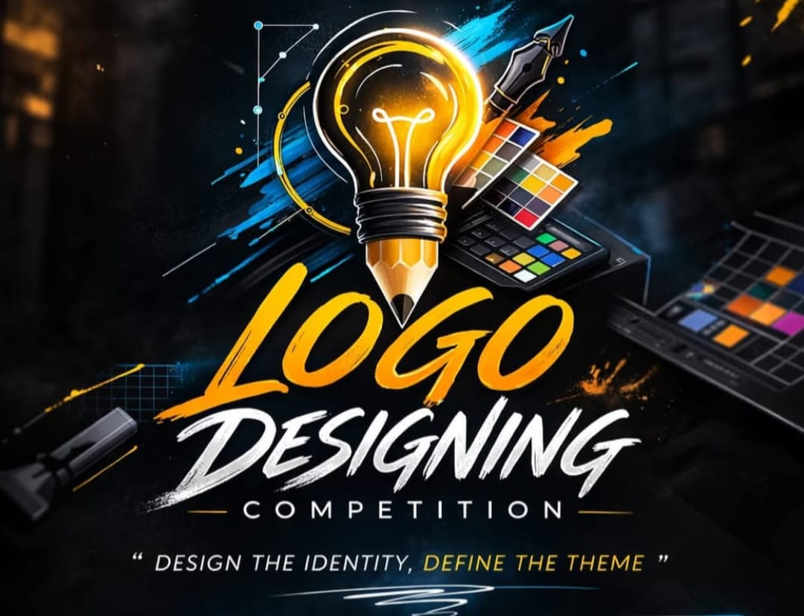
14. Logo Designing
Design a creative logo for a technical brand.
- Theme: The logo should effectively communicate the idea or theme announced on the spot.
- Platforms: Participants must work on Photoshop CS3 or Corel Draw.
- Content: The logo must contain relevant text and should not include any copyrighted material like photographs or icons.
- Dimensions: Square logos must be 1 inch x 1 inch; rectangular logos must be 2 inches wide x 1 inch high.
- Time Limit: The duration for the competition is 40 minutes.
- Tie-Breaker: In case of a tie, preference is given to the participant who completes the design in the minimum time.
The Logo Designing Competition invites creative minds to transform ideas into powerful visual identities. Participants design an original logo based on a live theme, with evaluations focusing on creativity, originality, relevance, and visual impact.
* For more detail regarding the event, please see the booklet.

15. Poster Presentation
Present your research ideas visually.
- Eligibility: Open to all UG/PG students of Engineering disciplines.
- Team Size: Individual or a maximum of 2 members per team.
- Poster Specifications: Size A1 (594 x 841 mm) in Portrait orientation. Text must be readable from 1 meter distance.
- Required Content: Must include Title, Authors, Abstract, Methodology, Results/Analysis, Conclusion, and References.
- Presentation: 5–7 minutes for presentation followed by 2–3 minutes of Q&A by judges.
- Integrity: Plagiarism is strictly prohibited. Participants must be present near their poster during evaluation.
Posters must belong to core or interdisciplinary areas such as Electronics & Communication, Electrical, Mechanical, Civil, Computer Science & IT, or Emerging Technologies (AI, IoT, Robotics, etc.).
Event Description:Technical Poster Presentation is a platform for budding engineers to showcase their innovative ideas, research findings, and technical solutions through creative visual representation. The event encourages research aptitude, technical clarity, and presentation skills.
* For more detail regarding the event, please see the booklet.

16. Reel in 60 Seconds
Create a viral tech reel about innovation.
- Time Limit: One hour will be given for Reel making. The final duration must be between 30 and 60 seconds.
- Theme: The reel must strictly follow the theme provided by the organizers.
- Originality: Content must be original and created by the participant. Copyrighted music/content must be properly credited or avoided.
- Format: Video must be in vertical format (9:16).
- Editing: Basic editing is allowed; however, excessive VFX is discouraged.
- Restrictions: Any offensive, political, religious, or explicit content will lead to immediate disqualification.
- Submission: Reels must be submitted before the given deadline.
"Reel in 60 Seconds" is a dynamic creative video-making competition where participants showcase their content creation and editing skills. The event emphasizes effective visual communication and artistic flair within a strictly limited timeframe.
* For more detail regarding the event, please see the booklet.

17. Robo War
The ultimate battle of bots.
- Dimensions & Weight: Must fit within 45 cm x 45 cm x 45 cm; Max weight 10 kg.
- Control: Must be controlled wirelessly via a 4-frequency system.
- Safety: Mandatory emergency stop (E-stop) or kill switch and visible safety locks for active weapons.
- Power: Only electrical power allowed; IC engines are strictly forbidden.
- Victory: Decided by immobilization (10-20 seconds), knockout (thrown out of arena), or judge's decision after 3 minutes.
- Weapons: Spinning weapons, flippers, lifters, and clamps are allowed; liquids, explosives, and nets are prohibited.
- Team Size: Maximum of 4 members per group.
- Safety: All robots must pass a technical inspection before competing.
Robo War is a robotic combat competition where custom-built robots battle inside a secured arena. Teams design robust wireless combat robots to compete in head-to-head matches, demonstrating strength, control, and strategic skills.
* For more detail regarding the event, please see the booklet.
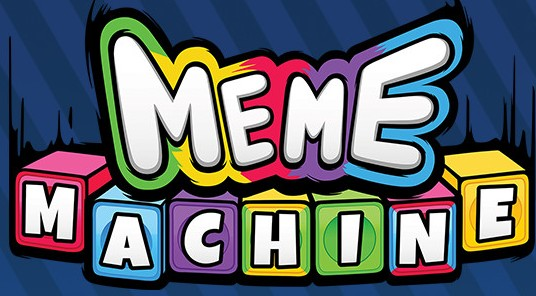
18. Meme the Machine
Create hilarious tech memes about engineering life.
- Theme: The theme for meme making will be given on the spot.
- Software: Participants can use design software of their choice.
- Format: Memes must be in Image (JPEG, PNG) or Video (MP4, GIF) format.
- Language: Use of English and Hindi only.
- Limits: File size should not exceed 5 MB; video display time 15–20 seconds.
- Timing: 45 minutes for preparation.
- Restrictions: Use of abusive language or controversial memes is strictly prohibited.
Teams (2–4 members) must bring their own laptops and verify internet connectivity and video quality prior to the event.
Event Description:This event challenges participants to design witty, original, and relatable memes that entertain while showcasing humor and innovation. Turn your ideas into laughter and let your creativity go viral!
* For more detail regarding the event, please see the booklet.
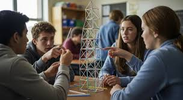
19. Straw Engineering Challenge
Build the tallest and strongest structure using only straws and tape.
- Planning Time: 15 Minutes
- Construction Time: 60 Minutes
- Testing & Evaluation: 30 Minutes
- Team Size: 2 to 4 members per team; interdisciplinary teams are encouraged.
- Materials: Only the provided materials may be used.
- Build Requirements: Structures must be free-standing (no external support) and remain within the base board limits.
- Post-Build: Once construction time is over, no modifications are allowed.
- Disqualification: Any violation of rules may lead to disqualification.
The Straw Engineering Challenge is a team-based STEM competition where participants design and construct a structural model using only drinking straws and limited connectors. Participants must build the tallest, strongest, or most stable structure within the given constraints.
* For more detail regarding the event, please see the booklet.
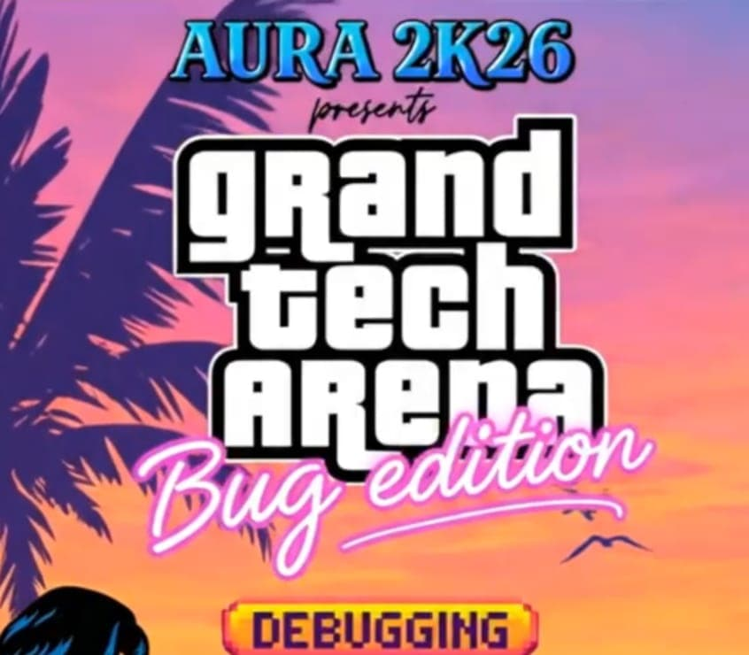
20. Debugging Contest
Find the bugs, fix the code.
The competition is a three-stage knockout tournament. Only participants who successfully debug the code in a given level qualify for the next.
- Level 1: The Syntax Sprint (Knockout Round)
- Goal: Fix syntax errors (missing semicolons, incorrect brackets, typos).
- Format: 30-minute timed round | Difficulty: Introductory.
- Level 2: The Multi-Bug Challenge
- Goal: Solve snippets with multiple stored errors, runtime errors, and complex syntax.
- Format: 20-minute timed round | Difficulty: Intermediate.
- Level 3: The Logic Breach (Grand Finale)
- Goal: Identify logical errors where code compiles but produces incorrect results.
- Format: 15-minute timed round | Difficulty: Advanced.
Whether you are a C++, Java, or Python enthusiast, this contest is a mission to "clear the logic breach." Step into the shoes of a software detective to evaluate and enhance your code-review capabilities in a high-energy environment.
* For more detail regarding the event, please see the booklet.
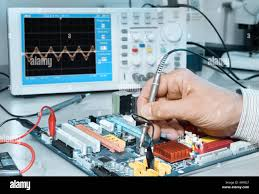
21. Electro Doctor
Diagnose and repair faulty circuits.
- Eligibility: Open to undergraduate, postgraduate students, and research scholars of the Faculty of Engineering & Technology.
- Format: This is an individual event.
- Interdisciplinary Participation: While primarily for electronics engineering, interdisciplinary teams may participate; each team must nominate a leader.
- Judging: The decision of the judging panel shall be final and binding.
ELECTRODOCTOR is a specialized event designed to test the troubleshooting skills of engineering students. This is a question-and-answer based challenge where participants must identify the steps to troubleshoot and provide a solution to a defect intentionally generated in an electronic appliance. The winner is determined based on the accuracy of the troubleshooting steps and the final solution provided.
* For more detail regarding the event, please see the booklet.

22. AEROTHON (DRONE RACING)
Sky is the limit. Showcase your flying skills and aerodynamics.
- Round I: Drone Racing Challenge.
- Round II: Precision Landing Accuracy Challenge.
- Safety: Each team must comply with UAV safety and operational guidelines throughout the event.
- Inspection: All drones must undergo mandatory technical and safety inspection before participation.
- Arena: Teams must operate drones only within the designated netted or barricaded arena.
- Scoring: Racing is judged on time and accuracy; landing is judged on stability and time taken.
- Disqualification: Violation of safety rules or regulatory guidelines may result in disqualification.
AEROTHONE is a high-speed drone racing competition that tests precision landing, control, and real-time decision-making. Participants pilot their drones through a specially designed aerial track filled with obstacles. The objective is to complete the course in the shortest time while maintaining stability.
* For more detail regarding the event, please see the booklet.

23. Tech Pictionary
Draw tech terms, let your team guess.
- Level 1 (Basic): Simple technical terms.
- Level 2 (Intermediate): Moderately complex concepts.
- Level 3 (Advanced): Conceptual and advanced technical terms.
- Team Size: Each team will consist of 3–4 participants.
- Mechanism: Teams pick a chit with a technical term; one member draws while others guess within the time limit.
- Restrictions: No letters, numbers, symbols, or gestures are allowed in the drawing. Mobile phones or external help are strictly prohibited.
- Power Cards: Limited advanced power cards are provided to each team to add strategy and excitement.
- Rotation: The drawing member rotates each round.
Tech Pictionary is an interactive technical drawing and guessing event designed exclusively for technical students. The contest evaluates technical knowledge, creativity, quick thinking, and teamwork through three levels of increasing difficulty.
* For more detail regarding the event, please see the booklet.
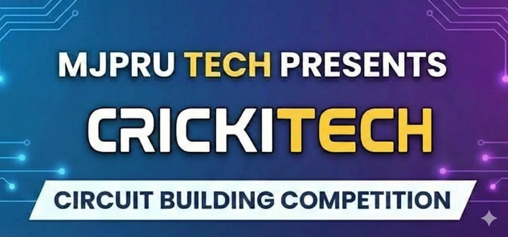
24. Cirkitech
Design complex circuits and logic gates.
- Eligibility: Open to undergraduate, postgraduate students, and research scholars of the Faculty of Engineering & Technology.
- Team Size: Participants must take part in teams of two to three members.
- Interdisciplinary: Primarily an electronics engineering stream event, but interdisciplinary teams may participate; each team must nominate one leader.
- Materials: Each team will be provided with a breadboard, basic electronics components, and connecting wires.
- Judging: The decision of the judging panel shall be final and binding.
Cirkitect is an event designed to test the circuit-building skills of students. Teams must assemble provided components to create a specific circuit as requested within a given time frame. The team that completes the circuit on time with the desired output will be declared the winner.
* For more detail regarding the event, please see the booklet.

25. Kabaad Se Jugaad
Create something from waste and e-waste.
- Team Size: Each team will comprise of a maximum of 3 members.
- Eligibility: Interdisciplinary teams may participate.
- Leadership: Each team will nominate one team leader.
- Required Tools: Teams must bring their own soldering iron, tools, duct tape, superglue, etc..
KABAAD se JUGAAD is an event designed to test the imagination, building skills, and teamwork of technical students. Each team must select materials from a heap of e-waste—such as old PCB boards, desktops, and electronic components—to create a working or non-working utility or showpiece within the allotted time. The team with the best creation will be declared the winner.
* For more detail regarding the event, please see the booklet.
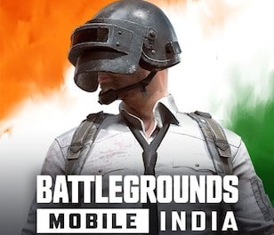
26. E-Sports
Battleground for the ultimate gamers.
- Team Size: 4 players (Squad format).
- Format: Custom Room Matches (TPP).
- Maps: Erangel / Miramar / Livik.
- Device Restrictions: Mobile phones only. No tablets, iPads, or emulators allowed.
- Integrity: Use of third-party apps, hacks, or cheats will result in immediate disqualification.
- Fair Play: Toxic or unsporting behavior will lead to disqualification.
- Proof: Teams must submit match result screenshots as proof.
- Requirement: Each participant must have a mobile phone with active internet connectivity.
Join the ultimate BGMI squad tournament, designed to test your team's strategy, survival instincts, and high-level combat skills. Whether you excel in aggressive rushing tactics or long-range sniping, this event provides the perfect stage to showcase your tactical abilities.
* For more detail regarding the event, please see the booklet.
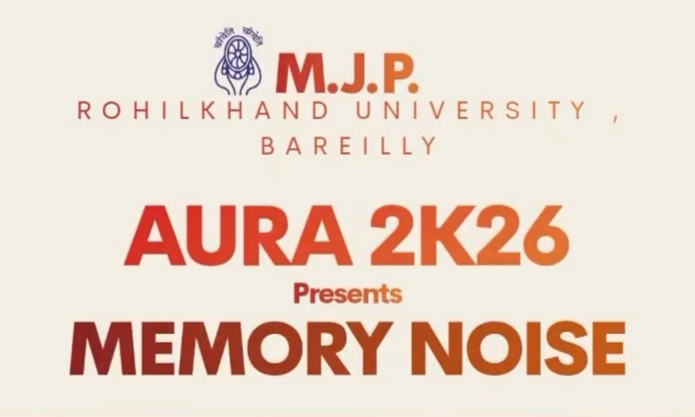
27. Memory Noise
Test your memory amidst heavy distraction.
- Eligibility: Open to undergraduate, postgraduate students, and research scholars of the faculty of Engineering & Technology.
- Participation: This is an individual event.
- Interdisciplinary: While primarily an electronics engineering stream event, interdisciplinary teams may participate; each must nominate a leader.
- Materials: Participants must bring their own blue or black pen for drawing the circuit. A blank A4 sheet will be provided.
- Judging: The decision of the judging panel shall be final and binding.
MEMORY NOISE is designed to test the memorizing ability of participants. A circuit diagram will be projected for a limited time frame. Participants must then memorize and reproduce the diagram on an A4 sheet within a given time interval. The winner is determined by who draws the diagram with every detail closest to the original.
* For more detail regarding the event, please see the booklet.
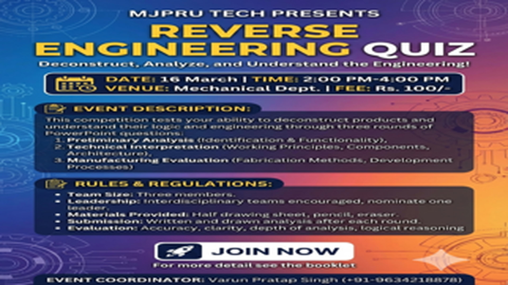
28. Reverse Engineering Quiz
Deconstruct products to understand logic and engineering.
The competition consists of three rounds, each containing three questions demonstrated via PowerPoint presentation.
- Round 1: Preliminary Analysis – Basic questions related to identification and functionality.
- Round 2: Technical Interpretation – Detailed analysis of working principles, components, and architecture.
- Round 3: Manufacturing Evaluation – Identification of fabrication methods and development processes.
- Team Size: Participants will take part in teams of three members.
- Leadership: Interdisciplinary teams are encouraged; each team must nominate one leader.
- Materials: A half drawing sheet, pencil, and eraser will be provided to each team.
- Requirements: Participants must draw relevant block diagrams or circuit layouts and write technical analyses.
- Submission: Teams must submit their written and drawn analysis at the end of each round.
- Evaluation: Based on accuracy, clarity of drawings, depth of analysis, and logical reasoning.
This academic competition is designed to enhance analytical thinking and technical understanding among undergraduate engineering students. Participants are provided with a prototype (circuit, program, or instrument) to analyze its structure, working principles, and manufacturing techniques.
* For more detail regarding the event, please see the booklet.